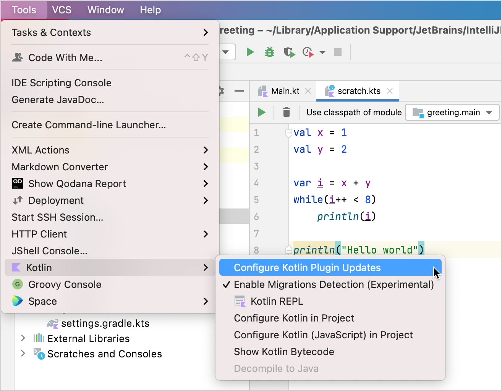
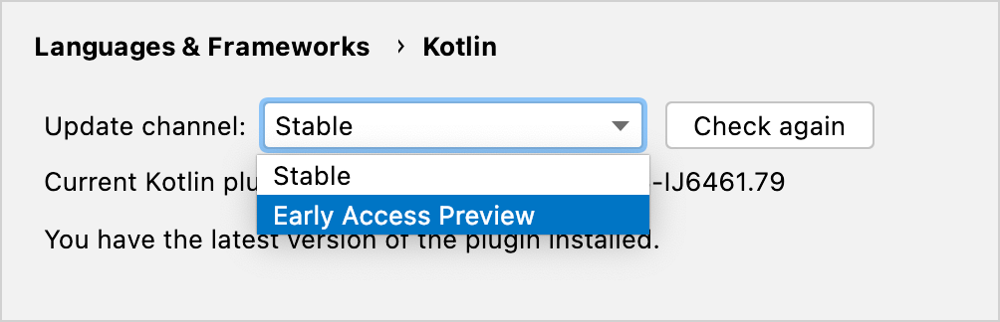
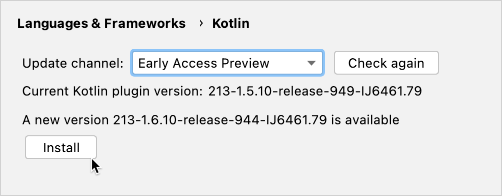

Install the EAP Plugin for IntelliJ IDEA or Android Studio
You can follow these instructions to install the preview version of the Kotlin Plugin for IntelliJ IDEA or Android Studio.
-
Select Tools | Kotlin | Configure Kotlin Plugin Updates .
 -
In the Update channel list, select the Early Access Preview channel.
 -
Click Check again . The latest EAP build version appears.
 -
Click Install .
If you want to work on existing projects that were created before installing the EAP version, you need to configure your build for EAP .
If you run into any problems
-
Report an issue to our issue tracker, YouTrack .
-
Find help in the #eap channel in Kotlin Slack ( get an invite ).
-
Roll back to the latest stable version: in Tools | Kotlin | Configure Kotlin Plugin Updates , select the Stable update channel and click Install .